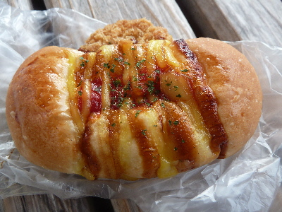
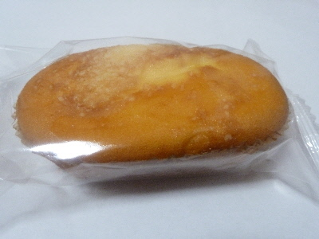
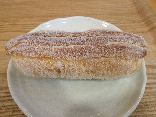
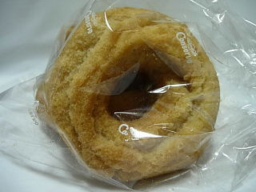
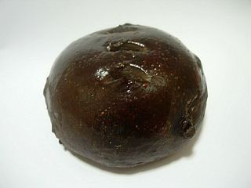

クーズコンセルボのコロッケパン
2018/08/11
今日は出雲市の中央通り付近でイベントをやっていました。
神話まつりっていうのかな？夜のイベントなせいか、夕方はまだ空いていました。
ステージでは踊りとかコンサートをしていましたが、ちょっと寂しかったです。

駅付近はビアガーデンをやっててにぎやかでした。お酒の力は偉大ですね。
私は駅でコロッケパンを買いました。
調味料が色々かかってて美味しかったです。コロッケはソースあった方が美味しいですよね。
島根県出雲市駅北町10-3
2018/08/11
今日は出雲市の中央通り付近でイベントをやっていました。
神話まつりっていうのかな？夜のイベントなせいか、夕方はまだ空いていました。
ステージでは踊りとかコンサートをしていましたが、ちょっと寂しかったです。

駅付近はビアガーデンをやっててにぎやかでした。お酒の力は偉大ですね。
私は駅でコロッケパンを買いました。
調味料が色々かかってて美味しかったです。コロッケはソースあった方が美味しいですよね。
2018/06/08
出雲市駅の百均で買い物したついでに近くのパン屋さんに行きました。

こくうまチーズを買いました。
パン屋さんで売っているパンなのでこのパン屋さんで作ったものかと思って買ったんですが、よく見ると姫路市の岡野食品産業ってところのパンでした。
仕入商品の販売もやってるんですね。
岡野食品産業はコンセルボ等をフランチャイズ展開してる会社みたいです。
こくうまチーズパンですが、チーズ蒸しパンをちょっとコンガリさせたようなパンでした。
2013/12/14
出雲市駅にあるパン屋さんでパンを買って、隣の喫茶スペースで食事をしました。

パンはお皿に乗って出ました。
惣菜パンは温めてもらえました。
お皿は食べやすくていいですね。
ドリンクを注文して、美味しくいただきました。
2009/4/11
見た目がゴツゴツしてて美味しそうなドーナッツですね。

サーターアンダギー風のドーナッツです。色んなタイプのドーナッツがありますが、私はコノタイプが一番好きです。
噛みごこちとか、ほどよい甘さとか、油の感じとかがいいですね。美味しかったです。
今日は出雲市長候補の人の演説があるみたいで、駅付近は賑わってました。いつもこれくらい人がいるといいのにな。
2008/3/23
今日の山陰中央新報のりびえーるで紹介されてて、「最近行ってないので行ってみよう！」っと思いお店に行きました。
変わった商品が色々あったんですが、真っ黒なパンがとても目についたのでこのNYチョコロールを買ってみました。

生地にチョコが入ったぱんで、チョコチップも少し入ってました。
チョコケーキみたいかなと想像したんですが、チョコが重すぎず、パンらしい味がちゃんとあり、いいバランスだなと思いました。
2006/7/22
出雲市駅の下の、アトネスいずも内のパン屋さん「クーズコンセルボ」に行きました。
買ったのはヨモギの入ったロールパンと、栗きんとんみたいなものです。
よもぎロールは、ちょっと塩味がするのが特徴的でした。ロールパンってほんのり甘いイメージがありますよね。でもパンの中にはヨモギが入ってるので、野菜には砂糖よりも塩の方が相性がいいのかなーなんて思いながら食べました。ちょっとかわってて面白かったです。
栗ポテトは、円柱状な栗きんとんな感じです。バターっぽい味がするので、味はスイートポテトの方が近いです。甘さが控えめだったんで、バターや塩の味がわかりやすかったです。
2つの商品を食べましたが、両方とも砂糖よりも塩かげんが目立ちました。